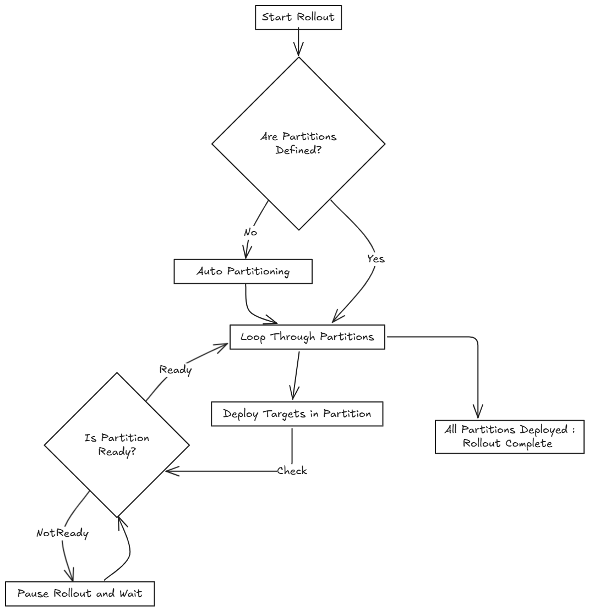
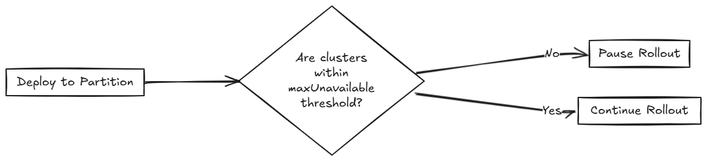

Estrategia de despliegue
SUSE® Rancher Prime Continuous Delivery utiliza una estrategia de despliegue para controlar cómo se despliegan las apps a través de los clústeres. Puedes definir el orden y agrupación de los despliegues de clústeres utilizando particiones, lo que permite despliegues controlados y actualizaciones más seguras.
SUSE® Rancher Prime Continuous Delivery evalúa el estado Ready de cada BundleDeployment para determinar cuándo proceder a la siguiente partición. Para más información, consulta Campos de estado.
Durante un despliegue, el estado de GitRepo indica el progreso del despliegue. Esto te ayuda a entender cuándo los paquetes se convierten en Ready antes de continuar:
-
Para despliegues iniciales:
-
Uno o más clústeres pueden estar en un estado
NotReady. -
Los clústeres restantes están marcados como
Pending, lo que significa que el despliegue no ha comenzado. -
Para despliegues:
-
Uno o más clústeres pueden estar en un estado
NotReady. -
Los clústeres restantes están marcados
OutOfSynchasta que el despliegue continúe.
Las opciones de configuración del despliegue están documentadas en el campo rolloutStrategy del fleet.yaml.
|
Si |
¿Cómo funciona el particionamiento?
Las particiones se utilizan únicamente para agrupar y controlar el despliegue de BundleDeployments a través de los clústeres. No afectan las opciones de despliegue de ninguna manera.
Si los clústeres objetivo no forman parte de la partición manual, no se incluirán en el despliegue. Si un clúster forma parte de una partición, recibirá un BundleDeployment cuando se procese la partición.
Las particiones se consideran NotReady si tienen clústeres que superan el número permitido de NotReady clústeres. Si un clúster está fuera de línea, el clúster objetivo no se considerará Ready y permanecerá en el estado NotReady hasta que vuelva a estar en línea y despliegue con éxito el BundleDeployment.
El umbral se determina por:
-
Particiones manuales: Utiliza el valor
maxUnavailabledentro de cada partición para controlar la preparación de esa partición; de lo contrario, si no se especifica, utilizarolloutStrategy.maxUnavailable. -
Particiones automáticas: Utiliza el valor
rolloutStrategy.maxUnavailablepara controlar cuándo una partición está lista.
SUSE® Rancher Prime Continuous Delivery procede solo si el número de particiones NotReady permanece por debajo de maxUnavailablePartitions.
|
SUSE® Rancher Prime Continuous Delivery despliega despliegues en lotes de hasta
|
El siguiente diagrama muestra cómo SUSE® Rancher Prime Continuous Delivery gestiona el despliegue:

Varios límites que se pueden configurar en SUSE® Rancher Prime Continuous Delivery:
| Campo | Descripción | Default |
|---|---|---|
maxUnavailable |
Número máximo o porcentaje de clústeres que pueden estar |
100% |
maxUnavailablePartitions |
Número o porcentaje de particiones que pueden estar |
0 |
autoPartitionSize |
Número o porcentaje de clústeres por partición auto-creada. |
25% |
autoPartitionThreshold |
Número mínimo de clústeres requeridos antes de que se habilite la auto-partición. Por debajo de este umbral, todos los clústeres se colocan en una única partición. |
200 |
maxNew |
Número máximo de |
50 |
particiones |
Define particiones manuales por etiquetas de clúster o grupo. Si se establece, se ignora autoPartitionSize. |
– |
SUSE® Rancher Prime Continuous Delivery admite particionamiento automático y manual. Para más información sobre las opciones de configuración, consulta la opción rolloutStrategy en la referencia fleet.yaml.
Particionamiento Automático: SUSE® Rancher Prime Continuous Delivery crea automáticamente particiones utilizando autoPartitionSize.
Por ejemplo, tienes 200 clústeres y estableces autoPartitionSize al 25%, SUSE® Rancher Prime Continuous Delivery crea cuatro particiones de 50 clústeres cada una. El despliegue avanza en lotes de 50 clústeres, comprobando maxUnavailable antes de continuar.
La configuración de autoPartitionThreshold controla cuándo se habilita la auto-partición:
-
Por debajo del umbral: Todos los clústeres se colocan en una única partición, independientemente de la configuración de
autoPartitionSize. Esto previene particionamientos innecesarios para ampliaciones pequeñas. -
En o por encima del umbral: SUSE® Rancher Prime Continuous Delivery crea múltiples particiones basadas en
autoPartitionSize. -
Umbral personalizable: Puedes bajar el límite para habilitar la partición con menos clústeres (por ejemplo, establecerlo en 50 para pruebas a pequeña escala) o aumentarlo para evitar la partición hasta que tengas un gran número de clústeres (por ejemplo, establecerlo en 500).
-
Desactivar la auto-partición: Establece en 0 para forzar todos los clústeres en una sola partición independientemente de la cantidad.
Por ejemplo:
rolloutStrategy:
autoPartitionThreshold: 50 # Enable partitioning with only 50 clusters
autoPartitionSize: 50% # Create partitions of 50% each
[source,text]Con 50 clústeres, esto crea 2 particiones de 25 clústeres cada una. Sin establecer autoPartitionThreshold, esos 50 clústeres estarían en una sola partición (ya que el límite por defecto es 200).
Particionamiento manual: Defines particiones específicas utilizando la opción partitions. Esto proporciona control sobre la selección de clústeres y el orden del despliegue.
|
Si especificas particiones manualmente, se ignora el |
Por ejemplo, considera:
rolloutStrategy:
partitions:
- name: demoRollout
maxUnavailable: 10%
clusterSelector:
matchLabels:
env: staging
- name: stable
maxUnavailable: 5%
clusterSelector:
matchLabels:
env: prod
[source,text]SUSE® Rancher Prime Continuous Delivery entonces:
-
Selecciona clústeres basados en
clusterSelector,clusterGroupoclusterGroupSelector.-
Las particiones pueden ser especificadas por
clusterName,clusterSelector,clusterGroupyclusterGroupSelector.
-
-
Inicia el despliegue a la primera partición.
-
Espera hasta que la partición sea considerada
Ready(dependiendo del umbralmaxUnavailable). -
Procede a la siguiente partición.
El siguiente diagrama ilustra cómo SUSE® Rancher Prime Continuous Delivery maneja el despliegue a través de múltiples particiones, incluyendo verificaciones de preparación y flujo de despliegue:

|
|
Dentro de cada partición, SUSE® Rancher Prime Continuous Delivery despliega hasta maxNew BundleDeployments a la vez (por defecto: 50). El diagrama a continuación muestra cómo SUSE® Rancher Prime Continuous Delivery determina si proceder o esperar durante este proceso:

|
SUSE® Rancher Prime Continuous Delivery recomienda etiquetar clústeres para que puedas usar esas etiquetas para asignar clústeres a particiones específicas. |
|
SUSE® Rancher Prime Continuous Delivery procesa las particiones en el orden en que aparecen en el archivo |
Partición Única
Si no defines rolloutStrategy.partitions, SUSE® Rancher Prime Continuous Delivery crea particiones automáticamente en función del número de clústeres objetivo:
-
Para menos de
autoPartitionThresholdclústeres (por defecto 200), SUSE® Rancher Prime Continuous Delivery utiliza una única partición. -
Para
autoPartitionThresholdo más clústeres, SUSE® Rancher Prime Continuous Delivery utiliza el valor deautoPartitionSize(por defecto 25%) para crear particiones.
Por ejemplo, con 200 clústeres (cumpliendo el autoPartitionThreshold por defecto), SUSE® Rancher Prime Continuous Delivery utiliza el autoPartitionSize por defecto del 25%. Esto significa que SUSE® Rancher Prime Continuous Delivery crea 4 particiones (25% de 200 = 50 clústeres por partición). SUSE® Rancher Prime Continuous Delivery procesa hasta 50 clústeres a la vez, lo que significa que:
-
Despliega a los primeros 50 clústeres.
-
Evalúa la preparación en función de
maxUnavailable.-
Si se cumple la condición, procede a los siguientes 50, y así sucesivamente.
-
Múltiples Particiones
Si defines múltiples particiones, SUSE® Rancher Prime Continuous Delivery utiliza maxUnavailablePartitions para limitar cuántas particiones pueden ser NotReady a la vez. Si el número de particiones NotReady excede maxUnavailablePartitions, SUSE® Rancher Prime Continuous Delivery pausa el despliegue.
Prevención de tormentas de extracción de imágenes
Durante el despliegue, cada clúster en sentido descendente extrae imágenes de contenedor. Si cientos de clústeres comienzan a extraer imágenes simultáneamente, esto puede abrumar el registro y comportarse como un ataque DDoS.
Para evitar esto, SUSE® Rancher Prime Continuous Delivery puede controlar cuántos clústeres se actualizan a la vez. Puedes utilizar las siguientes opciones de configuración de despliegue para ralentizar y programar el despliegue:
-
autoPartitionSize -
partitions -
maxUnavailable
SUSE® Rancher Prime Continuous Delivery no añade retrasos artificiales durante el despliegue. En su lugar, avanza según el estado de readiness de las cargas de trabajo en cada clúster. Los factores que afectan la preparación incluyen el tiempo de extracción de imágenes, el tiempo de inicio y las sondas de preparación. Aunque se recomienda utilizar sondas de preparación, no son estrictamente necesarias para controlar la velocidad de despliegue.
Por ejemplo, tienes 200 clústeres, que están particionados manualmente, cada uno con 40 clústeres y quieres prevenir una tormenta de extracción de imágenes:
-
maxUnavailablePartitions: Establece en 0. -
maxUnavailable: Establece en 10%.
Cómo avanza el despliegue:
-
SUSE® Rancher Prime Continuous Delivery comienza con la primera partición (40 clústeres).
-
Despliega hasta 50
BundleDeploymentsa la vez. Así que despliega a los 40 clústeres en la partición en un solo lote. -
SUSE® Rancher Prime Continuous Delivery verifica la preparación de los clústeres en la partición.
-
Si más de 4 clústeres no están listos, entonces la partición se considera
NotReadyy el despliegue se pausa. -
Una vez que ≤4 clústeres están
NotReady, SUSE® Rancher Prime Continuous Delivery continúa con el despliegue.
-
-
Cuando toda la partición está mayormente lista (90%), SUSE® Rancher Prime Continuous Delivery pasa a la siguiente partición.
Si deseas o necesitas procesar menos de 40 despliegues a la vez, puedes poner menos clústeres en cada partición.
Casos de Uso y Comportamiento
Si el número de clústeres no se divide de manera uniforme, SUSE® Rancher Prime Continuous Delivery redondea hacia abajo los tamaños de las particiones. Por ejemplo, 230 clústeres con autoPartitionSize: 25% resulta en:
-
Cuatro particiones de 57 clústeres
-
Una partición de 2 clústeres
Escenario: 50 Clústeres (Partición Única)
rolloutStrategy:
maxUnavailable: 10%
[source,text]-
SUSE® Rancher Prime Continuous Delivery crea una partición que contiene todos los 50 clústeres, ya que no se definen particiones.
-
No es necesario especificar
maxUnavailablePartitions, ya que solo se crea una partición. -
Aunque no hay una partición manual especificada y
maxUnavailableestá configurado al 10%, SUSE® Rancher Prime Continuous Delivery despliega a los 50 clústeres a la vez (el comportamiento por lotes anulamaxUnavailableinicialmente). -
La evaluación ocurre después de que se crean todos los despliegues.
El siguiente diagrama ilustra cómo SUSE® Rancher Prime Continuous Delivery maneja 50 clústeres en una sola partición:

Escenario: 100 Clústeres (Partición Única)
rolloutStrategy:
maxUnavailable: 10%
[source,text]-
SUSE® Rancher Prime Continuous Delivery crea una partición que contiene todos los 100 clústeres, ya que no se definen particiones.
-
No es necesario especificar
maxUnavailablePartitions, ya que solo tienes una. -
Aunque no hay una partición manual especificada y
maxUnavailableestá configurado al 10%, SUSE® Rancher Prime Continuous Delivery despliega a 50 clústeres a la vez (el comportamiento por lotes anulamaxUnavailableinicialmente).
Si 10 clústeres (10% de 100 clústeres) no están disponibles, el despliegue de los 50 clústeres restantes se pausa hasta que haya menos de 10 clústeres NotReady.
Escenario: 200 Clústeres (Múltiples Particiones)
rolloutStrategy:
maxUnavailablePartitions: 1
autoPartitionSize: 10%
[source,text]-
SUSE® Rancher Prime Continuous Delivery crea 10 particiones, cada una con 20 clústeres.
-
El despliegue procede secuencialmente por partición.
-
Si dos o más particiones se convierten en
NotReady, el despliegue se pausa. -
Si una partición es
NotReady, el despliegue puede proceder a la siguiente.
SUSE® Rancher Prime Continuous Delivery crea BundleDeployments para 20 clústeres, espera a que se conviertan en Ready, y luego procede al siguiente. Esto limita efectivamente la cantidad de descargas de imágenes desde clústeres en sentido descendente a un máximo de ~40 imágenes a la vez.
Escenario: 200 Clústeres (Preparación estricta, particiones manuales)
La partición manual te permite controlar la agrupación de clústeres con maxUnavailablePartitions: 0.
rolloutStrategy:
maxUnavailable: 0
maxUnavailablePartitions: 0
partitions:
- name: demoRollout
clusterSelector:
matchLabels:
stage: demoRollout
- name: stable
clusterSelector:
matchLabels:
stage: stable
[source,text]-
Defines particiones manuales usando
clusterSelectory etiquetas comostage: demoRolloutystage: stable. -
SUSE® Rancher Prime Continuous Delivery crea
BundleDeploymentspara clústeres en la primera partición (por ejemplo,demoRollout). -
El despliegue procede estrictamente en orden, SUSE® Rancher Prime Continuous Delivery solo se mueve a la siguiente partición cuando la actual se considera lista.
-
Con
maxUnavailable: 0ymaxUnavailablePartitions: 0, SUSE® Rancher Prime Continuous Delivery pausa el despliegue si alguna partición no se considera lista.
El siguiente diagrama describe cómo SUSE® Rancher Prime Continuous Delivery maneja si continuar o pausar el despliegue.

Esto asegura la preparación completa y el despliegue escalonado en los 200 clústeres. Usa este enfoque cuando necesites una secuenciación precisa del despliegue y la preparación completa del clúster antes de avanzar.
Valores predeterminados de la estrategia de despliegue
Si los valores de despliegue a nivel de partición no están definidos, SUSE® Rancher Prime Continuous Delivery aplica los valores globales de rolloutStrategy en fleet.yaml. Las configuraciones específicas de partición anulan los valores globales cuando se establecen explícitamente.
Por defecto, SUSE® Rancher Prime Continuous Delivery establece:
-
maxUnavailablea100%: Todos los clústeres en una partición pueden serNotReadyy seguir siendo considerados Listos. -
maxUnavailablePartitionsa0: Previene el despliegue solo cuando una o más particiones son consideradasNotReady. Sin embargo, esta verificación es ineficaz si todas las particiones parecen Listas debido amaxUnavailable: 100%.
Por ejemplo, considera 200 clústeres con configuraciones predeterminadas:
-
SUSE® Rancher Prime Continuous Delivery crea 4 particiones de 50 clústeres cada una (
autoPartitionSize: 25%). -
Debido a que
maxUnavailablees100%, cada partición se trata comoReadyde inmediato. -
SUSE® Rancher Prime Continuous Delivery avanza a través de todas las particiones independientemente de la preparación real.
SUSE® Rancher Prime Continuous Delivery te recomienda controlar los despliegues estableciendo:
-
Baja
maxUnavailable, p. ej. 10%. -
Establece
maxUnavailablePartitionsen 0 o más, si lo deseas.
Esto asegura:
-
Las particiones están listas antes de que el despliegue continúe.
-
SUSE® Rancher Prime Continuous Delivery pausa el despliegue si demasiadas particiones no están listas.